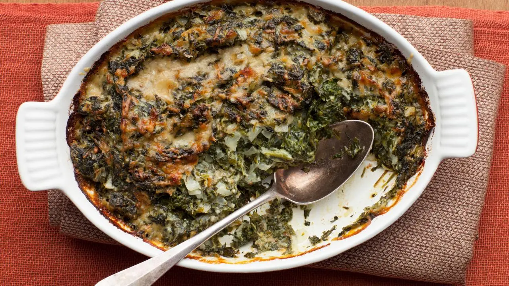

Spinach Gratin

Description
If you like spinach, you're probably already sold on this recipe. And if you don't...well, this recipe is mostly cheese, dairy, and onions. What could be wrong with that?
Ingredients
- 2 Tbs butter
- 2 C chopped yellow onions (1 large)
- 2 Tbs flour
- 1/8 tsp grated nutmeg
- 1/2 C heavy cream
- 1 C milk
- 24 oz frozen chopped spinach, defrosted
- 1/2 C freshly grated Parmesan cheese (minimum, measure with your heart)
- 1/2 Tbs kosher salt
- 1/4 tsp freshly ground black pepper
- 1/4 C grated Gruyere cheese (or more, c'mon now)
Steps
- Preheat the oven to 425 degrees F.
- Melt the butter in a large, heavy-bottomed saute pan over medium heat. Add the onions and saute until translucent, about 15 minutes.
- Add the flour and nutmeg and cook, stirring, for 2 more minutes.
- Add the cream and milk and cook until thickened.
- Squeeze as much liquid as possible from the spinach and add the spinach to the sauce.
- Add half of the Parmesan cheese and mix well. Season, to taste, with salt and pepper.
- Transfer the spinach to a baking dish and sprinkle the remaining Parmesan and the Gruyere on top. Bake for 20 minutes until hot and bubbly. Serve hot.
Notes
You can prep this dish the day before and refrigerate until you're ready to bake. If you do, increase the bake time by about 5 minutes.
This recipe originally from the Food Network, thanks to Ina Garten.